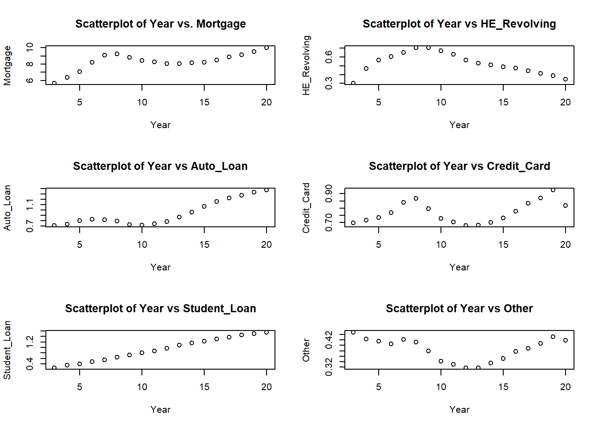

library(tidyverse)
library(ggplot2)
library(lubridate)
library(readxl)
knitr::opts_chunk$set(echo = TRUE, warning=FALSE, message=FALSE)Challenge 6
challenge_6
debt
Visualizing Time and Relationships
Challenge 6 Overview
The data set used for this challenge is debt dataset. The library packages used are tidyverse, ggplot2, lubridate
***Today’s challenge is to:
- read in a data set, and describe the data set using both words and any supporting information (e.g., tables, etc)
- tidy data (as needed, including sanity checks)
- mutate variables as needed (including sanity checks)
- create at least one graph including time (evolution)
- try to make them “publication” ready (optional)
- Explain why you choose the specific graph type
- Create at least one graph depicting part-whole or flow relationships
- try to make them “publication” ready (optional)
- Explain why you choose the specific graph type
R Graph Gallery is a good starting point for thinking about what information is conveyed in standard graph types, and includes example R code.
(be sure to only include the category tags for the data you use!)***
Read in data
The debt dataset is the category wise debt data in trillions from the first quarter of the year 2003 to the second quarter of 2021.
debt <-read_excel("_data/debt_in_trillions.xlsx", skip= 1, col_names = c("Year_Quarter", "Mortgage", "HE_Revolving", "Auto_Loan", "Credit_Card", "Student_Loan", "Other", "Total"))
head(debt)# A tibble: 6 × 8
Year_Quarter Mortgage HE_Revolving Auto_Loan Credit_Card Student…¹ Other Total
<chr> <dbl> <dbl> <dbl> <dbl> <dbl> <dbl> <dbl>
1 03:Q1 4.94 0.242 0.641 0.688 0.241 0.478 7.23
2 03:Q2 5.08 0.26 0.622 0.693 0.243 0.486 7.38
3 03:Q3 5.18 0.269 0.684 0.693 0.249 0.477 7.56
4 03:Q4 5.66 0.302 0.704 0.698 0.253 0.449 8.07
5 04:Q1 5.84 0.328 0.72 0.695 0.260 0.446 8.29
6 04:Q2 5.97 0.367 0.743 0.697 0.263 0.423 8.46
# … with abbreviated variable name ¹Student_LoanIt has 6 types of debt variables namely Mortgage, Home Equity revolving debt, Auto Loan, Credit Card, Student Loan and a column for all other debts. The total debt got almost doubled over the period from 2003 to 2021.
Briefly describe the data
Tidy Data (as needed)
debt<-debt%>%
separate("Year_Quarter", into=c("Year", "Quarter"), sep=":")%>%
fill(Quarter)
#debtdebt <- debt %>%
filter(Quarter == "Q4") %>%
select(!contains("Quarter"))
#debtThe data has been filtered so that we can take the debt details at the year-ending quarter.
attach(debt)
par(mfrow=c(3,2))
plot(Year, Mortgage, main="Scatterplot of Year vs. Mortgage")
plot(Year, HE_Revolving, main="Scatterplot of Year vs HE_Revolving")
plot(Year, Auto_Loan, main="Scatterplot of Year vs Auto_Loan")
plot(Year, Credit_Card, main="Scatterplot of Year vs Credit_Card")
plot(Year, Student_Loan, main="Scatterplot of Year vs Student_Loan")
plot(Year, Other, main="Scatterplot of Year vs Other")
When the data is being visualized, we get a more clear idea about the trend for each type of debts over the years. Student loan showed a steady increase in the whole period. Mortgage, Auto Loan and Credit card showed an up trend from the year 2003 to 2008 and then had a decline for a couple of years and again started to regain the uptrend. HE Revolving, eventhough doubled in the period till 2008, continuously declined after that.
Contribution to the total debt
Each variables’ contribution to the total debt is taken as percentage values.
debt_in_percentage <- debt %>%
mutate(Mortgage = (Mortgage/Total)*100,
HE_Rev = (HE_Revolving/Total)*100,
AutoLoan = (Auto_Loan/Total)*100,
CreditCard = (Credit_Card/Total)*100,
StudentLoan = (Student_Loan/Total)*100,
Others = (Other/Total)*100)
debt_in_percentage <- debt_in_percentage %>%
select(Year, Mortgage, HE_Rev, AutoLoan, CreditCard, StudentLoan, Others)
debt_in_percentage# A tibble: 18 × 7
Year Mortgage HE_Rev AutoLoan CreditCard StudentLoan Others
<chr> <dbl> <dbl> <dbl> <dbl> <dbl> <dbl>
1 03 70.2 3.74 8.73 8.65 3.14 5.56
2 04 70.3 5.18 8.05 7.93 3.82 4.68
3 05 71.0 5.65 7.92 7.36 3.92 4.15
4 06 72.8 5.34 7.26 6.78 4.26 3.59
5 07 73.6 5.23 6.59 6.78 4.43 3.41
6 08 73.1 5.56 6.24 6.84 5.05 3.25
7 09 72.7 5.81 5.93 6.53 5.93 3.11
8 10 72.2 5.70 6.07 6.23 6.93 2.91
9 11 71.7 5.44 6.36 6.10 7.57 2.86
10 12 70.8 4.96 6.90 5.99 8.52 2.80
11 13 69.9 4.59 7.49 5.93 9.37 2.75
12 14 69.1 4.31 8.07 5.92 9.78 2.83
13 15 68.1 4.02 8.78 6.05 10.2 2.90
14 16 67.4 3.76 9.20 6.19 10.4 3.00
15 17 67.6 3.38 9.29 6.34 10.5 2.96
16 18 67.4 3.04 9.41 6.42 10.8 3.01
17 19 67.6 2.76 9.41 6.55 10.7 3.05
18 20 69.0 2.40 9.44 5.63 10.7 2.88In any given year, Mortgage contributes the highest to the total debt. The contribution of Student Loan is increasing over the years and in 2020 it has reached above 10 % of the total debt.
Are there any variables that require mutation to be usable in your analysis stream? For example, do you need to calculate new values in order to graph them? Can string values be represented numerically? Do you need to turn any variables into factors and reorder for ease of graphics and visualization?
Document your work here.